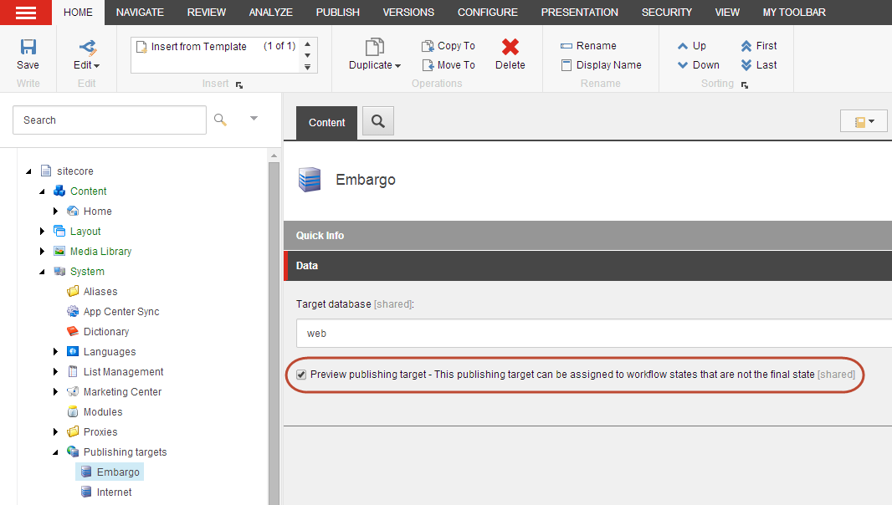

プレビュー公開対象にアイテムを公開する¶
デフォルトでは、ワークフロー内のアイテムは、ワークフロー の最終状態にある場合にのみ公開することができます。しかし、ワークフローの最終状態に到達する前にアイテムをパブリッシュする必要がある場合、例えば、非シ テコア・ユーザにアイテムをレビューしてもらいたい場合、アイテムをプレビュー・パブリッシング・ターゲットにパブリッシ ングすることができます。
プレビュー・パブリッシング・ターゲットは、1 つ以上のワークフロー状態に割り当てることができるパブリッシング・ターゲットで、そのワークフロー状態のアイテムをパブリッシュできるようにします。プレビュー パブリッシング ターゲットにパブリッシュすると、このプレビュー パブリッシング ターゲットが割り当てられたワークフロー状態にあるすべてのアイテムと、任意のワークフローの最終的なワークフロー状態にあるすべてのアイテムがパブリッシュされます。
このようにして、ワークフローの最終状態ではない（したがって公開できない）アイテムは、社内サイトに公開してレビューを受けたり、特定のパートナーや顧客のみがアクセスできるアーリーリリース素材を持つセキュアなサイトに公開したりすることができます。
プレビューパブリッシングのターゲットを作成する¶
プレビュー パブリッシング ターゲットを作成するには、以下の手順に従います。
コンテンツ エディタのコンテンツ ツリーで、［システム/パブリッシング ターゲット］に移動します。
フォルダ］タブの［オプション］セクションで［パブリッシング ターゲット］をクリックして、新しいパブリッシング ターゲットを作成します。
表示されるシステム ダイアログ ボックスで、プレビュー パブリッシング ターゲットの名前を入力し、[OK] をクリックします。
新しいパブリッシング ターゲットの［コンテンツ］タブで、ターゲット データベースの名前を入力し、［プレビュー パブリッシング ターゲット］チェック ボックスを選択します。
重要
ターゲット データベースの名前が正しく入力されていることを確認して、プレビュー パブリッシング ターゲットにパブリッシュしようとしたときにエラーが発生しないようにしてください。
保存をクリックします。
{kind=link}
{kind=link}
ワークフロー状態のアイテムをプレビューパブリッシング対象にパブリッシュする¶
ワークフロー状態のアイテムをプレビュー パブリッシング ターゲットにパブリッシュできるようにするには、次の手順に従います。
[コンテンツ エディタ］のコンテンツ ツリーで［システム/ワークフロー］に移動し、プレビュー パブリッシング ターゲットを割り当てるワークフロー ステートを選択します。
[データ］セクションで、このワークフロー状態に割り当てる1つまたは複数のプレビュー・パブリッシング・ターゲットを選択します。リストには、プレビュー パブリッシング ターゲットとして指定されたパブリッシ ング ターゲットのみが表示されます。
[保存］をクリックします。 これで、プレビュー公開ターゲットが割り当てられたワークフロー状態のアイテムは、特定のアイテムがどのプレビュー公開ターゲットに公開できるかを知らせる通知とともに表示されます。
{kind=link}
{kind=link}
注釈
プレビュー公開対象に公開しても、項目に設定されている公開制限は有効です。